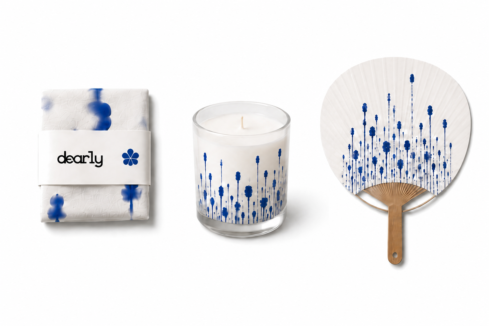
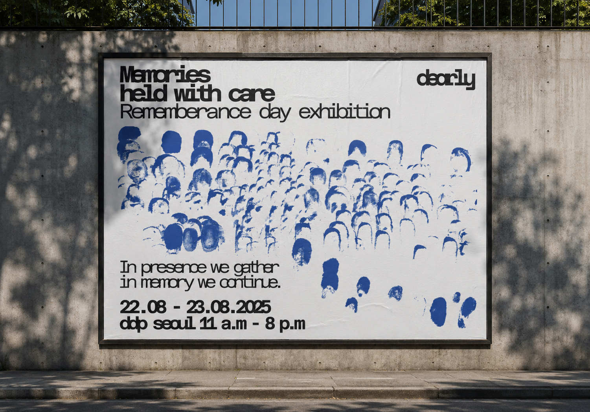
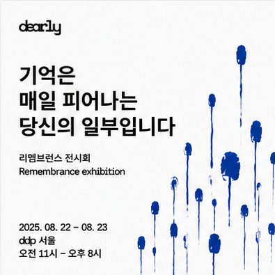
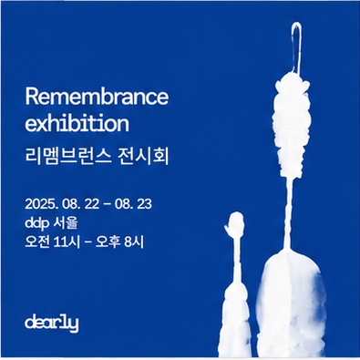
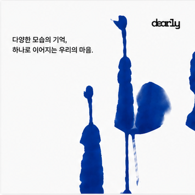
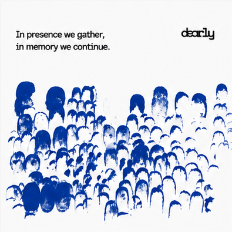
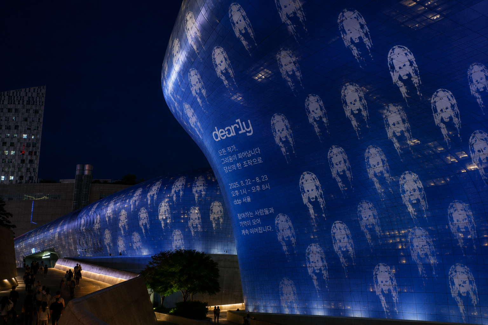
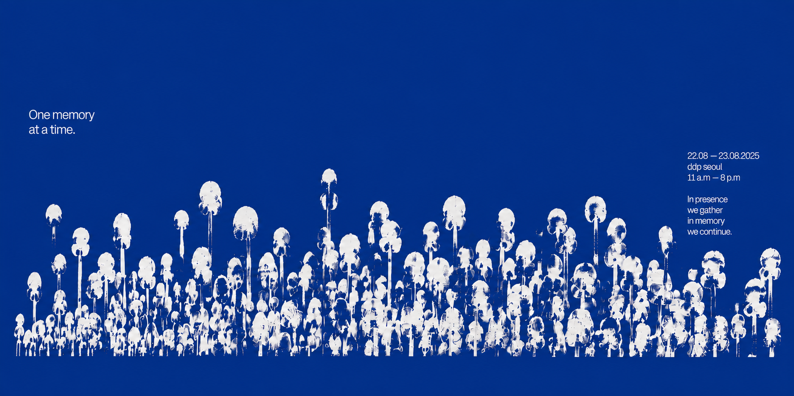
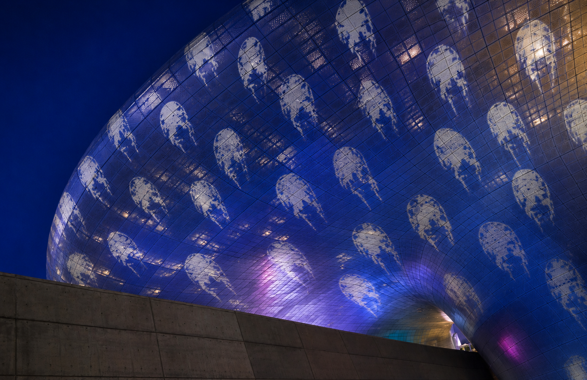

01 · Trace
I wanted to translate identity into a trace: a part of us that remains after we leave. Repeated impressions began to resemble flowers and small trees, turning remembrance into a growing field.
Remembrance exhibition
DDP Seoul · 22—23.08.2025
Be present.
Remember.
In presence we gather.
In memory we continue.
01 · About the exhibition
Dearly is a remembrance exhibition that gives private memory a shared public form. The identity begins with a single hand-made imprint: a small trace of one person, held with care.
Each mark becomes a flower. Gathered together, the flowers form a field that moves across print, objects, walls, and the architecture of DDP Seoul. The system turns remembrance into a collective act: quiet, visible, and still growing.
02 · Identity system

03 · Campaign applications

Social series
The identity moves through a sequence of quiet messages: individual traces become flowers, then gather into a shared field of remembrance.




04 · Identity in public space




Project note
Self-initiated conceptual project.
This project was developed for a branding lecture course. It was not commissioned by, or affiliated with, Dongdaemun Design Plaza.
Image source: Wikimedia Commons, CC BY 4.0. Graphic intervention: Mey Amisa, made in Photoshop.
05 · Process
01 · Trace
I wanted to translate identity into a trace: a part of us that remains after we leave. Repeated impressions began to resemble flowers and small trees, turning remembrance into a growing field.
02 · Indigo
I made the first studies with black ink, then refined them in Photoshop and Illustrator into indigo. The blue creates a calm place for visitors to remember the people they love.
03 · Proximity
Monospace type connects the identity to the digital afterlife. On the main posters, “remembrance” binds together up close and separates from afar: proximity brings individual memories together.